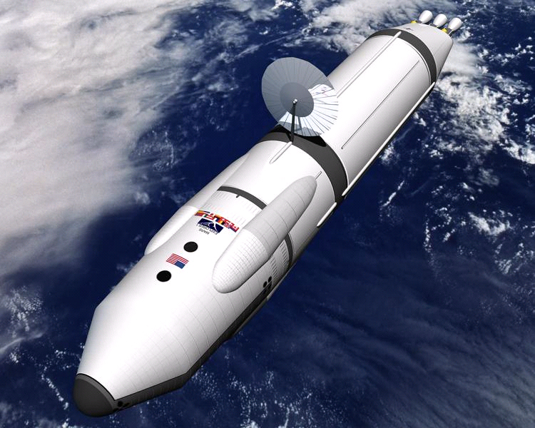

Spaceships
Select a spaceship to see the available options:
Swag Shuttle

- Crew capacity: 5 people
- Travel speed: 50,000 km/hour
- Duration: 7 days
- Destinations: Moon, Mars
- Price: $50,000 per person
School Skipper
- Crew capacity: 10 people
- Travel speed: 75,000 km/hour
- Duration: 14 days
- Destinations: Moon, Mars, Saturn
- Price: $100,000 per person

Mars
Mars is a planet with a distinctive reddish appearance, caused by iron oxide (rust) on its surface. Its diameter is about half that of Earth, with a surface area similar to that of Earth's dry land. The planet has numerous craters, canyons, and volcanic features, including the largest volcano in the solar system,

Venus
Venus is a planet with a bright and dense atmosphere, primarily composed of carbon dioxide. Venus has a diameter similar to that of Earth, and its surface is rocky and dotted with volcanoes, mountains, and craters. Its dense atmosphere also produces a yellowish-white appearance, with thick clouds that obscure the planet's surface from view. Venus has no moons, and it rotates slowly in the opposite direction to most planets in the solar system.

Earth
Earth is a planet with a diverse and dynamic surface, consisting of mountains, valleys, oceans, deserts, forests, and more. Its atmosphere is primarily composed of nitrogen and oxygen, with trace amounts of other gases, and is responsible for producing the blue coloration of the planet. It has one large moon, which is responsible for the tides on Earth. From space,

Pluto
Pluto is only about two-thirds the size of Earth's moon. Its surface is composed primarily of rock and ice, and it has a reddish-brown coloration Pluto also has a system of five known moons, the largest of which, Charon, is roughly half the size of Pluto itself..

Saturn
Saturn is a gas giant planet that is best known for its iconic rings, which make it one of the most recognizable planets in our solar system. The rings are made up of countless individual particles of ice and rock, and they stretch out for more than 175,000 miles (282,000 kilometers) from the planet's center. Saturn itself is a yellowish-brown color, and it has a distinctive banded appearance caused by the many layers of gas in its atmosphere. The planet is also home to dozens of moons, including the large and icy Titan, which is larger than the planet Mercury.